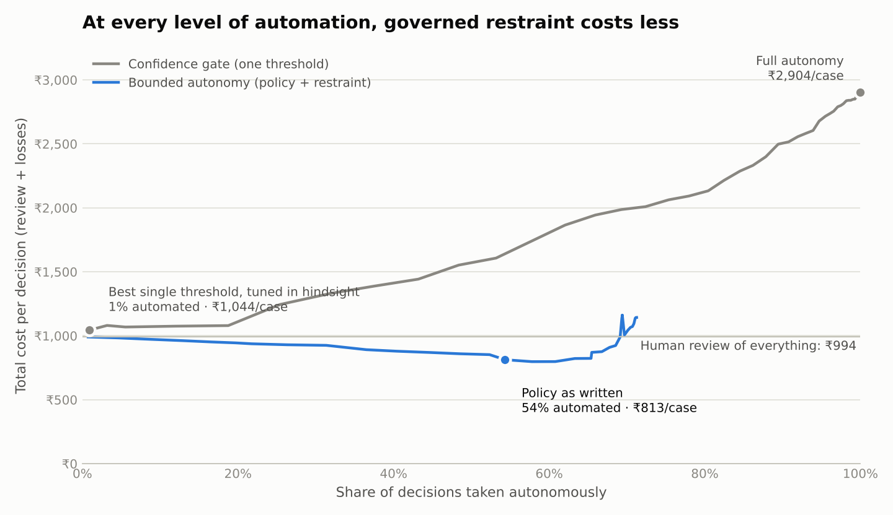

ReadSigil
Ideas are easy. Decisions have consequences.
ReadSigil explores what makes technology useful in the real world: trustworthy evidence, sound judgement, accountable AI and decisions you can defend. Read the analysis, try the tools and learn by doing.
Explore insights →Explore Decision AtlasBuild something
Founded and edited by Shashwat Kumar.
Elsewhere · Independently reported
External reporting and interviews featuring Shashwat Kumar: QA Financial on AI agents ↗ · ETBFSI on responsible agentic AI ↗. All media and conversations →
Selected essays on AI governance, metrics and data

Bounded autonomy: why the most valuable AI in a bank knows when not to act
The dangerous moment for a decisioning model is not when it is unsure. It is when the world has changed, the model has not noticed, and it is still confident.

Faster cars need better brakes
Nobody buys a sports car for its brakes, yet the brakes are what let you drive it fast. I keep coming back to that picture whenever a new AI capability lands on my desk.

Intelligence without a main character
Much of the conversation about general AI imagines a single brilliant system that does everything. I am not sure that is how it will show up.

When the score becomes the goal
Every analyst learns Goodhart's lesson the hard way: once a number is used as a target, people find ways to move the number that do not move the thing it was supposed to measure.

If agents can collaborate, they can trade
The moment two software agents can negotiate a task between them, they can also exchange something of value for it. Collaboration and commerce are closer cousins than they look.

Models are only as good as their inputs
Garbage in, garbage out is the oldest cliché in computing, and it has never been more relevant. Larger models are better at sounding confident, which makes bad inputs more dangerous rather than less.

Attention is not the same as value
Watching more young people aim for careers built on audience size has left me with an uncomfortable question: what happens to an economy when attention becomes the main thing people are trained to produce?
Field notes
DPDP Act 2023 and Rules 2025: a practical readiness guide
Plain-English guide to India's DPDP Act 2023 and DPDP Rules 2025: phased timeline to 13 May 2027, core obligations, penalties and a practical readiness checklist.
MSME-1 and Section 43B(h): what finance teams need ready by 31 October
MSME Form 1 half-yearly return (due 31 October and 30 April) and Income-tax Section 43B(h) 15/45-day payment rule explained, with a payables-ageing checklist.
Casebook: the decisions behind the data → Work samples → Topics glossary → About →